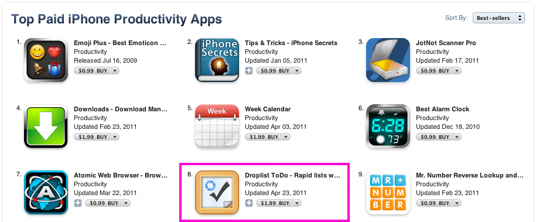
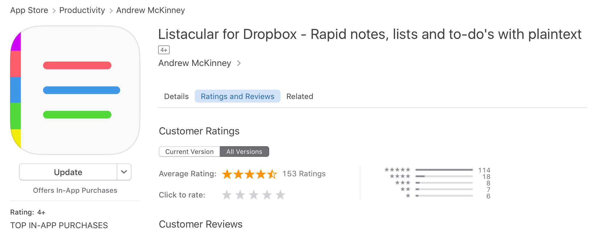

Drew McKinney
Listacular
"I love the slick interface for Listacular. It’s minimal, simple, and yet, it’s still elegant." AppAdvice
"The beauty of Listacular is in its ability to let you add new notes, lists or to-dos quickly and easily." Beautiful pixels
"Listacular is a new entrant into the fold that brings a beautiful interface, Dropbox syncing, and collaborative list editing to the table, and it's definitely worth a look." Lifehacker


Listacular is a text-based todo list, outliner, note taker, and task manager which syncs with Dropbox. While I started working on Listacular for about two months in 2013 as a side-project and spiritual successor to another app, it's cultish popularity helped blossom it into much more than a side-project since.
To this day, Listacular enjoys a 5-star rating on the appstore and has thousands of users despite minimal updates. It has been featured by Lifehacker, Beautify Pixels and App Advice, and is considered to be the successor to TaskPaper.
Listacular originated another from an app called Droplist
Listacular has a history through another app, Droplist, which was created way back in 2011. Before iCloud had been established as Apple's sync platform dujour, Dropbox was really the only way to sync your work across devices. Droplist was a todo list app which synced basic .txt files between the phone and Dropbox. A simple concept, but it turned out to have a big impact in the appstore s a top-10 paid productivity app ...for a few weeks...
While the app was successful, it was poorly written and needed a number of architectural improvements to get it up to snuff. In addition to the technical challenges, a number of customers reported that they felt underserved by the product. I spoke many of these dissastisfied customers to understand more about the apps shortcomings, but also more about who they were and what they cared about.
Goals for Listacular
What I learned from speaking to my customers is that manyh of them could be considered "power users": people who were already pushing the envelope with their apps and process, and were tech-savvy, and generally valued control over simplicity. They loved Droplist for it's fast list creation and use of plaintext files. But they wanted more flexibility in their list structure, and would frequently reference another plaintext app called TaskPaper. I felt that my customers wanted:
- A greater focus on rapid outlining and thought-mapping , not just creating to-do lists, which people were doing already
- Greater flexibility in the changing note data to todo items, and back again
- Setting due dates, alerts, and other relevant metadata like tagging

Interaction design
Rapid list and outline creation
Since a primary focus of Listacular was on fast and easy list creation, I wanted the editing experience to be seemless. I did not want users to constantly be creating an item, using the keyboard, hitting "done", and then have to repeat the pattern. I'd rather the user never leave the keyboard if possible.
To accomplish this, new list items could be made by hitting "return" on the keyboard. They would then be immediately editing the next item. On top of this, they could manipulate indentation, item type (todo vs. bullet point vs. plain text), and text formatting (bold/italic) directly from the keyboard.
I also wanted users to be able to seamlessly indent and outdent items. This is particularly important for outlining. In Droplist, this was on the list item itself, which turned out to be a really clunky experience. For Listacular, I wanted to make all layout options accessibly via the keyboard.
Low-effort item completion, deletion, reording and due-dating
Along with rapid list editing, I wanted the non-editing mode to be just as seamless. To do this, I used a number of gestures found in apps like Mailbox and Clear.
Completing (or destroying) a list item could be accomplished with varying degrees of the same gesture. To check an item, the user would pull the todo item right until the cell became green (to indicate the action would take place on release). To go delete the item altogether, the user would pull the item further right. In this way, the interactions are complementary.
Setting a due date or alert could be done by pulling the list to the left. Rather than overloading this gesture with multiple actions (such as settings, due date, and a variety of other catchall actions), I decided to only have a single action. For todo items, this meant setting a due date and alert. For lists themselves, this meant list sharing options.
Results and accolades
Listacular was launched to much less fanfare initially, but eventually found a strong niche audience. It received very positive articles from Lifehacker, AppAdvice, and had its own feature on Beautiful Pixels. It continues to be steadily profitable to this day, despite not having the big opening day success with Droplist did.